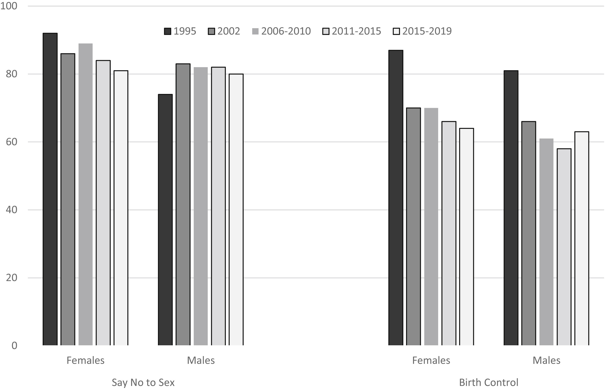
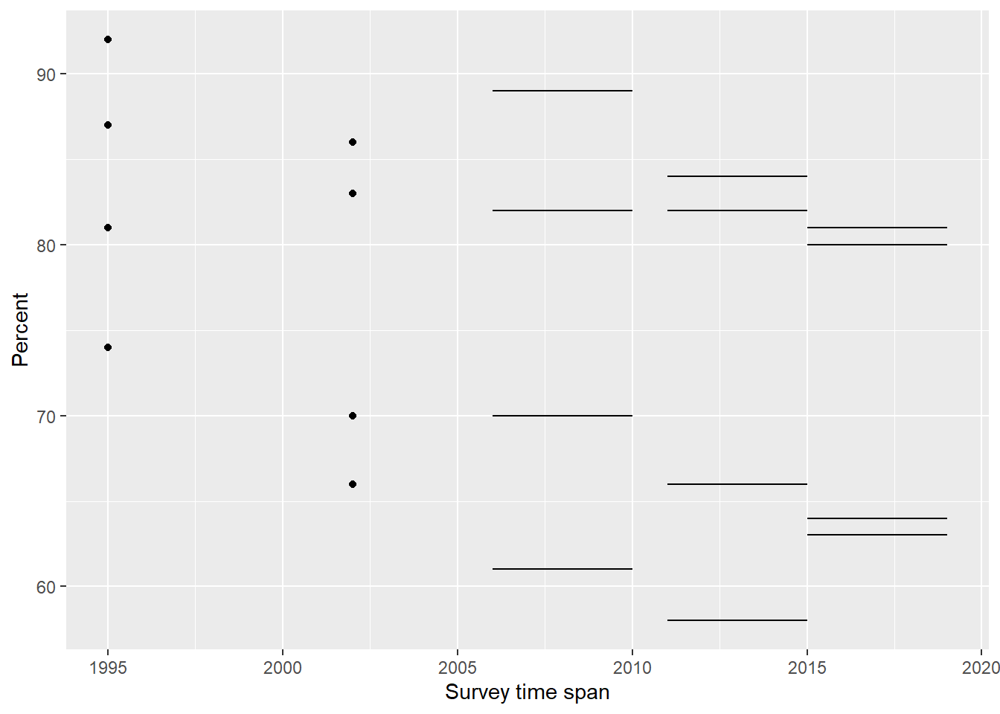

R code
# packages used
library("data.table")
library("ggplot2")
library("ggpubfigs")Combining the results of studies with different time spans in a single chart when changes over time are the story.
Richard Layton
2022-06-01
TBD
While working on a previous post, I cited an article on US sex education for adolescents (Lindberg & Kantor, 2022). That article included a conventional clustered bar chart displaying results from the National Survey of Family Growth (NSFG).
The chart caught my attention because the story in the data is how research results evolve over time—yet time is not shown using a conventional horizontal scale. In this post, I redesign the chart with time as an independent variable encoded graphically as distance along an axis.
As with most of my redesign exercises, my purpose is not finding fault with the authors, but answering the questions:
The R code for the post is listed under the “R code” pointers.
The grouped bar chart by Lindberg and Kantor illustrates the changing fraction of US adolescents receiving sex education instruction from 1995 to 2019. The results are compiled from 5 studies, each with its own time span. Bars are clustered are by educational topic and student sex.

In their prose, the authors make the argument that
Young people today are less likely to receive instruction on key sex education topics than they were 25 years ago, as indicated by comparing the prevalence estimates from 2011–2015 and 2015–2019 calculated in this study to published estimates from earlier NSFG rounds.
The chart supports the assertion. The quantitative variable (percentage) is the bar height with bars shown in full to correctly avoid distorting the comparison. The gray-scale fills are appropriately sequential and the bars are arranged from left to right with survey year the implicit independent variable.
A clustered-bar chart like this yields a qualitative visual result for a particular data cluster, for example, the evolution of Say No to Sex instruction for Females. The design does not, however, facilitate direct comparisons between different clusters. Nor does it provide a visual encoding of the time spans involved.
The data structure is outlined in Table 1. The percentage of teens aged 15–19 receiving instruction is the single quantitative variable. Because three of the studies cover a span of years, both start and end years are recorded.
| variable | structure |
|---|---|
| year study starts | categorical, ordinal, five levels |
| year study ends | categorical, ordinal, five levels |
| educational topic | categorical, nominal, two levels |
| student sex | categorical, nominal, two levels |
| percent receiving instruction | quantitative |
I don’t have the original data tables, so I approximated the values by measuring the bar lengths in the original figure. These estimates are available in the blog data directory as a CSV file.
study start end Topic Sex pct
<int> <num> <num> <char> <char> <num>
1: 1 1995 1995 Birth control Female 87
2: 1 1995 1995 Birth control Male 81
3: 1 1995 1995 Say no to sex Female 92
4: 1 1995 1995 Say no to sex Male 74
5: 2 2002 2002 Birth control Female 70
6: 2 2002 2002 Birth control Male 66
7: 2 2002 2002 Say no to sex Female 86
8: 2 2002 2002 Say no to sex Male 83
9: 3 2006 2010 Birth control Female 70
10: 3 2006 2010 Birth control Male 61
11: 3 2006 2010 Say no to sex Female 89
12: 3 2006 2010 Say no to sex Male 82
13: 4 2011 2015 Birth control Female 66
14: 4 2011 2015 Birth control Male 58
15: 4 2011 2015 Say no to sex Female 84
16: 4 2011 2015 Say no to sex Male 82
17: 5 2015 2019 Birth control Female 64
18: 5 2015 2019 Birth control Male 63
19: 5 2015 2019 Say no to sex Female 81
20: 5 2015 2019 Say no to sex Male 80
study start end Topic Sex pctBecause the basic verbal argument describes a decline over 25 years, I select years as the independent variable and display it on a common horizontal scale. Like the original chart, percentage receiving instruction is the quantitative vertical scale.
One interesting challenge is choosing the data markers (ggplot2 “geoms”) when some studies appear in one year only and other studies span several years. My solution is to subset the data within the geom specification, using a point for the one-year studies and line segment for the studies that span more than one year.

The symbols are aligned vertically, one column of points or segments for each study. There are four markers or segments per study indicating the results by sex and topic (corresponding to the four clusters in the original chart).
ggpubfigs for color-vision-deficient-friendly palettes